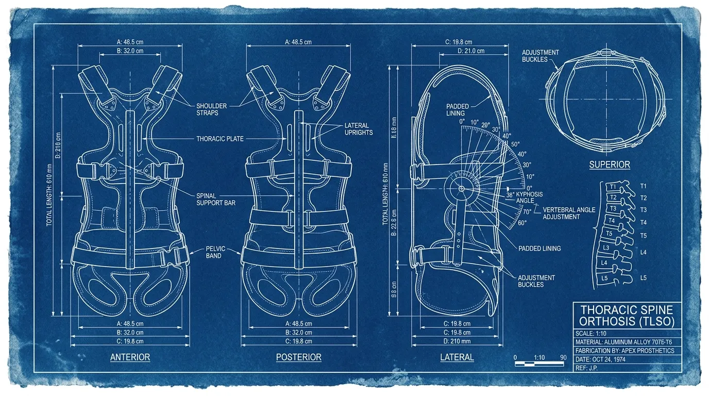
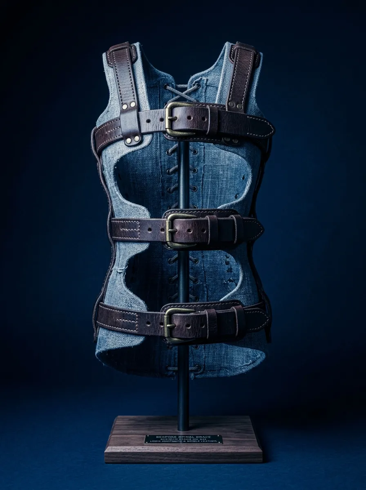
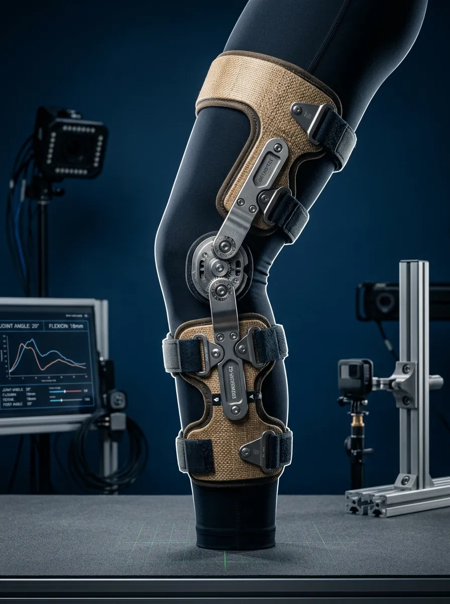
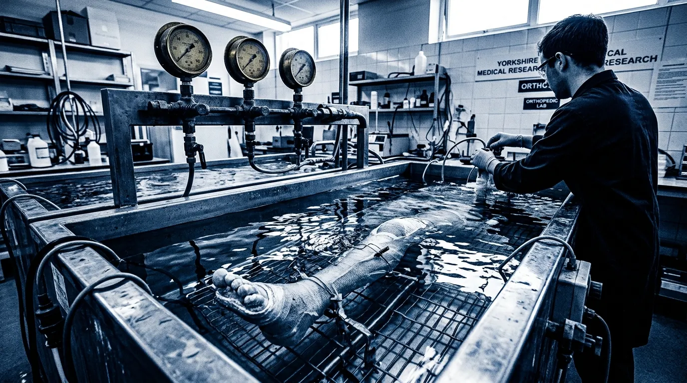
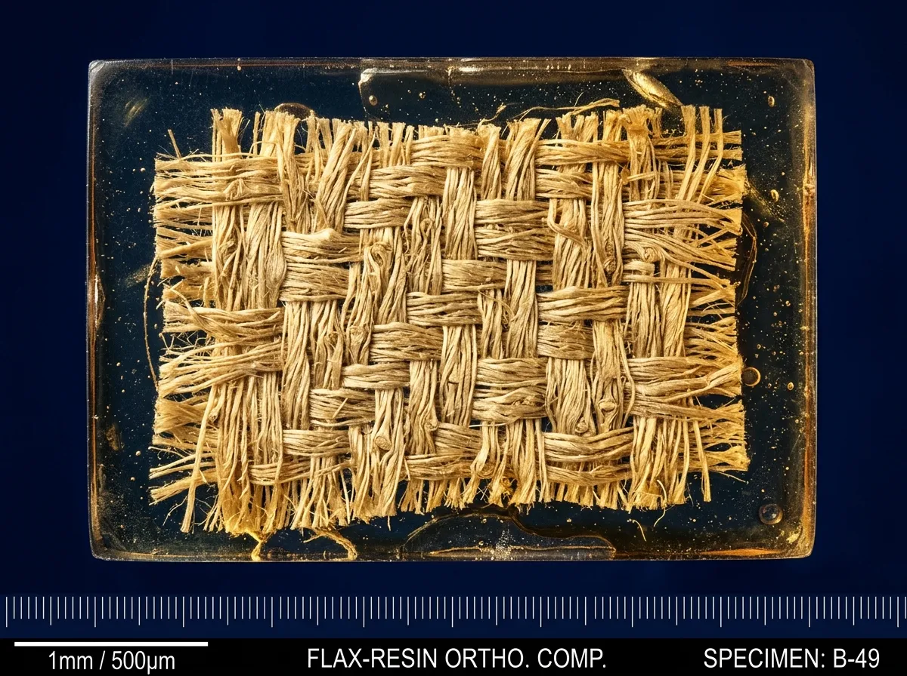
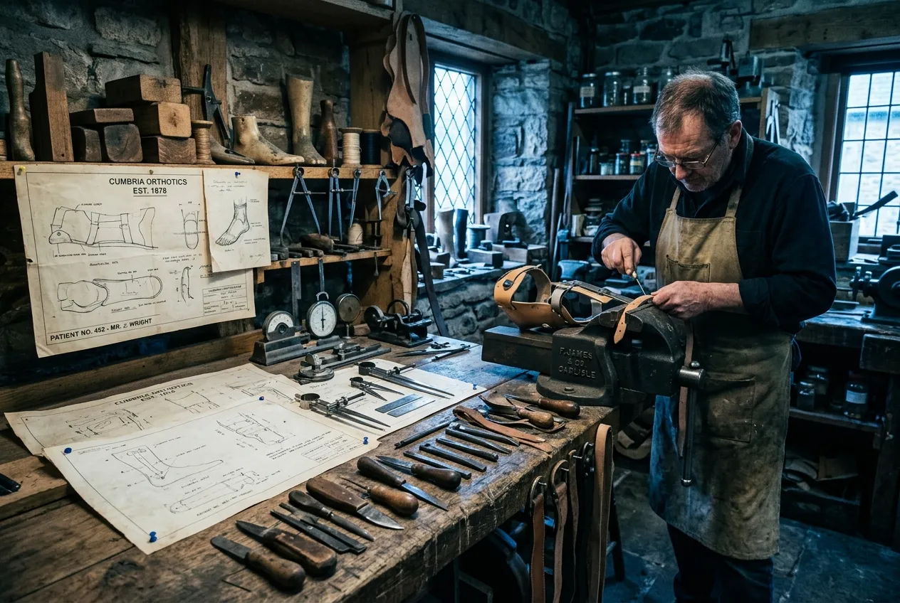

Dentdale Orthotic Castworks designs, casts, and hand-moulds non-polymeric anatomical braces for complex spinal and lower-limb immobilisation.
Off-the-shelf thermoplastic orthoses deform under prolonged thermal load and yield erratic pressure gradients across compromised spinal segments. We capture musculoskeletal topography under hydrostatic pressure to establish an exact neutral axis before drafting full-scale cyanotype production lofts. Each resulting armature is laminated from unbleached English flax scrim and pine-rosin matrix to deliver permanent rigidity without cutaneous breakdown.

The Goniometric Lofting Protocol
The manufacturing of a rigid corrective orthosis begins with volumetric stabilisation rather than optical approximation. The patient is suspended within our equalised saline hydrostatic chamber, allowing soft tissue to distribute evenly under gravity while calibrated lead-wire contour strips register the sagittal and coronal curvatures of the vertebral column. This physical impression yields a volumetric plaster positive accurate to within four-tenths of a millimetre across all anatomical landmarks, eliminating the shear artefacts endemic to handheld laser scans.
From this positive cast, our draughtsmen draft a 1:1 cyanotype architectural lofting sheet on linen drafting cloth. Every hinge locus, relief pocket, and tempered spring-steel stave is plotted against the patient’s radiological Cobb angles and pelvic tilt indices. The physical blueprint serves as the exact working surface upon which four plies of unbleached dry flax scrim are hand-laid, wet out with hot botanical rosin, and cured under 0.8 bar of vacuum pressure. The resultant shell possesses three times the flexural modulus of medical-grade polypropylene at half the wall thickness.
Final assembly takes place on our bench vices in Dent, where vegetable-tanned bridle leather harnesses and hand-turned brass buckler pins are secured through pre-drilled load points. Before leaving the workshop, each finished armature is indexed against the original drafting sheet under tension calipers to verify that corrective torque vectors match the consultant surgeon’s prescription down to the degree. We do not manufacture adaptive garments; we build rigid structural scaffolds for the skeletal frame.
Skeletal Armature Registry: Six Calibrated Orthoses
Standardised mechanical foundations tailored to individual prescription variables.

TLSO-IV Thoraco-Lumbo-Sacral Jacket
Full-torso immobilization for kyphoscoliosis and burst fractures.
- Composition: Flax/Rosin/Steel
- Flexural Rigidity: 28.5 GPa
- Weight: 840g
- Adjust Margin: ±12mm
- Indication: M41.20
CTLSO-Cervical Halo Restraint
Rigid occipital-mandibular cervical stabilizer with tempered steel uprights.
- Composition: Flax/Cobalt Steel
- Flexural Rigidity: 32.0 GPa
- Weight: 610g
- Adjust Margin: ±8mm
- Indication: S12.00

KAFO-7 Genu-Recurvatum Knee-Ankle Strut
Offset knee hinge with posterior spring assist for paralytic hyperextension.
- Composition: Flax/Rosin/Brass
- Flexural Rigidity: 24.1 GPa
- Weight: 920g
- Adjust Margin: ±15mm
- Indication: M21.86
AFO-Sagittal Solid Ankle Rig
High-rigidity leaf-spring orthosis for severe hemiplegic drop-foot.
- Composition: Laminate Leaf-Spring
- Flexural Rigidity: 26.8 GPa
- Weight: 380g
- Adjust Margin: ±5mm
- Indication: M21.37
Pectus Excavatum Dynamic Compressor
Adjustable anterior sternal compression cage with calibrated spring gauges.
- Composition: Steel/Leather/Flax
- Flexural Rigidity: Variable
- Weight: 550g
- Adjust Margin: ±25mm
- Indication: Q67.6
Carpal-Tarsal Biomechanical Splint
Rigid immobilisation cuff with articulated finger extension outriggers.
- Composition: Scrim/Alloy Wire
- Flexural Rigidity: 18.5 GPa
- Weight: 140g
- Adjust Margin: ±10mm
- Indication: M21.34
Hydrostatic Volumetric Capture & Bench Tooling
Fluid dynamics ensure physiological pressure distribution that algorithmic scans cannot simulate.
Three-stage capture protocol for structural accuracy:
- Stage I: Saline Immersion
The patient is lowered into our 37°C hydrostatic chamber. Archimedean displacement perfectly equalises external pressure across the skin surface, neutralising gravitational tissue sag. - Stage II: Plaster Negative Setting
Rapid-cure medical gypsum is applied while the hydrostatic environment is maintained, locking the skeletal frame in a true, non-ischaemic neutral posture. - Stage III: Positive Extraction
The rigid negative yields a 1:1 volumetric positive plaster mould, completely devoid of the artificial shear artefacts and unquantifiable flesh compressions created by manual manipulation or optical surface-mapping rigs.

Material Matrix: Organic Composites vs. Synthetic Thermoplastics
Modern polypropylene degrades and retains heat; natural flax-rosin breathes, dampens vibration, and maintains tensile rigidity indefinitely.

| Mechanical Specification | Flax-Rosin Composite | Standard Polypropylene |
|---|---|---|
| Flexural Modulus | 28.5 GPa | 1.5 GPa |
| Thermal Creep Rate (37°C) | < 0.01% / 1000h | 2.40% / 100h |
| Moisture Transmissibility | High (Breathable) | Zero (Impermeable) |
| Tensile Strength-to-Weight | 120 MPa/g | 35 MPa/g |
Clinical Referral Pathway & Prescription Standards
Direct clinical collaboration with prescribing specialists. Strict admission criteria apply.
Radiographic Submission
Submission of standing full-spine AP and lateral radiographs (DICOM format) with Cobb angle computations.
Atelier Fitting Appointment
Patient attends the Dent workshop for the hydrostatic capture protocol and mechanical baseline assessment.
Loft Approval
1:1 cyanotype structural plans are drafted and verified against consultant prescription vectors.
Final Articulation Audit
Finished armature is fitted, indexed under tension calipers, and permanently secured.
What radiological data is required prior to casting?
We require recent (within 30 days) standing full-spine anteroposterior (AP) and lateral radiographs. Standardised DICOM files containing precise Cobb angle metrics and Risser sign evaluations are strictly mandated to plot the correction axes accurately.
How does unbleached flax composite perform under humid conditions?
The natural pinene rosin matrix is intrinsically water-repellent, preventing delamination. Simultaneously, the microscopic porosity of the woven English flax scrim permits continuous cutaneous respiration, eliminating the heat retention and perspiration maceration common with synthetic thermoplastics.
Can staves be readjusted post-fitting as spinal correction progresses?
Yes. The embedded cobalt-steel staves are secured via mechanical brake adjustments. Our clinicians can perform precise cold-forged bend modifications to the uprights in the workshop to dynamically match structural improvements over the treatment timeline.
What is the typical production timeline from hydrostatic casting to delivery?
Due to the rigid requirements of our vacuum-cure protocol and natural vulcanisation, fabrication mandates a continuous 14-day cycle. This includes casting, drafting the cyanotype loft, laminating the flax-rosin matrix, and final leather harness assembly.
Is Dentdale Castworks accredited for NHS Specialized Commissioning?
We are a fully registered Medical Device Manufacturer with the MHRA (Registration #UK-CA-091184). Our facility and clinical orthotists operate in strict compliance with UK Orthotic guidelines and maintain active affiliation with the British Association of Prosthetists and Orthotists (BAPO).
Dent Workshop Registry & Clinical Appointments
An operational workshop in the Yorkshire Dales welcoming referred patients and surgical consultants.

Dentdale Castworks Atelier
High Laning, Dent
Sedbergh, Cumbria
LA10 5QJ, United Kingdom
ID: #UK-CA-091184 | BAPO Affiliate